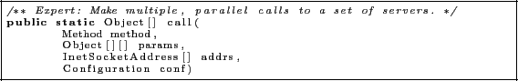

The distributed Lucene client library needs to use threading to query shards as querying each shard individually would be very slow. Luckily org.apache.hadoop.ipc.RPC provides a special method that provides a threaded parallel call to nodes as shown in Figure 7. This has the following arguments: the method you want to call, then calling parameters as an array, the socket addresses as an array, and the Hadoop configuration. This method is very useful and simplified the client library considerably.
Figure 7:
Call method in org.apache.hadoop.ipc.RPC
|  |
Mark Butler
2008-05-23